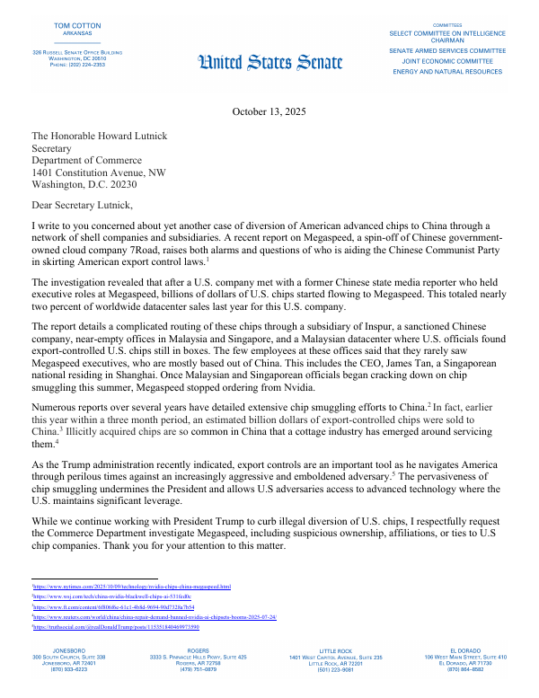
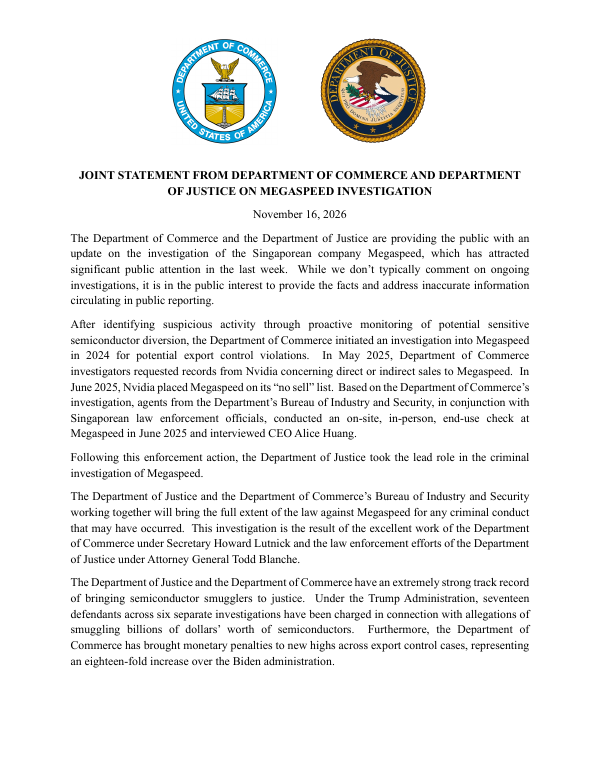

公司治理
复职已确认，独立调查继续
NVIDIA董事会11月23日一致同意恢复黄仁勋总裁、CEO及董事职务；公司称独立调查继续进行。复职本身不代表调查已有结论。
NVIDIA · GOVERNANCE · EVIDENCE
从公开报道到董事会去留，再到出口管制与国会问询。把已经发生的动作，与仍待证实的判断分开读。

TL;DR
从同一组资料中，分别呈现已经确认的动作与尚待证实的判断。
黄仁勋已复职，独立调查继续；贸易限制已有正式文件，情报指控仍存分歧。股价比较统一采用常规交易收盘价。
公司治理
NVIDIA董事会11月23日一致同意恢复黄仁勋总裁、CEO及董事职务；公司称独立调查继续进行。复职本身不代表调查已有结论。
出口管制
BIS将Megaspeed等七家实体列入实体清单：11月23日生效、25日刊登公报。相关EAR物项须申请许可，原则为推定拒绝；列单不等于刑事定罪。
情报评估
Reuters于11月26日援引匿名知情人士称，美方官员对情报的解释存在分歧。这是媒体对匿名评估的报道，尚无公开机构一致结论。
市场价格
NVDA较10月6日收盘239.24美元下跌37.59%。两端均为常规交易收盘价；价格变化不能单独证明某一事件对股价的影响。
阅读边界：复职、行政列单与调查程序可以由原始文件确认；情报身份、知情程度及违法责任仍需分别举证。未被调查与经过调查获免责，是不同状态。
THREE PARALLEL RECORDS
公司治理、出口监管与情报说法并行发展。沿每一行阅读，点击节点查看日期、来源和证据边界。
日期按区段排列，间距不代表时长；三条线不表示因果关系。
董事会与管理安排
董事会宣布启动独立调查；启动程序不等于公布最终结论。
NVIDIA 董事会声明 2026-11-08NVIDIA宣布黄辞任，Kress出任临时CEO，Jones出任董事长。
NVIDIA《NVIDIA Announces CEO Transition》公司设立国家安全与出口管制监督委员会；这是制度安排。
NVIDIA：成立国家安全与出口管制监督委员会董事会一致恢复黄的职务，同时明确独立调查继续。
NVIDIA · 复职公告官方动作与程序
联合声明署日11-16，网页11-17发布；司法部牵头刑事调查，BIS协作。
DOJ / Commerce · 联合声明众院能源商务委员会要求NVIDIA及商务部不晚于12-02提供简报。
众院能源商务委员会：要求Nvidia及商务部提供简报将Megaspeed等七家实体列入清单；行政动作不等于刑事定罪。
BIS · 最终列单规则与11-23生效的是同一规则。此处单列正式出版日期，避免混淆。
BIS · 最终列单规则未公开情报的转述
原发书目已定位，付费正文受限；相关情报判断未见公开原始材料。
FT · 11-06原报WSJ于11-25报道前一天闭门简报：未见中方策划关系的证据。原始情报未公开。
WSJ · 闭门简报报道Reuters援引匿名来源描述评估分歧；不是统一公开的机构结论。
Reuters · 情报评估分歧实线边框表示文件或公开动作；虚线边框涉及媒体转述的未公开判断。展开后可直接查看原始出处。
PEOPLE · INSTITUTIONS · EVIDENCE
把关系的性质与证据等级一起看。选择主题，再点击连线标签或下方关系按钮，查看其来源和限定条件。
连线表示特定关系或调查动作，不能沿连线推导知情、共谋或违法责任。
保留核心人物与公司治理关系；所有任命、表态和被报道的私人关系均注明日期与不同的证据范围。
图可横向滑动；图下文字按钮也能查看全部关系与证据。
行政列单、刑事调查和国会监督各有职责。实线表示已找到支持该程序动作的官方材料，不代表责任已经认定。
图可横向滑动；图下文字按钮也能查看全部关系与证据。
此层刻意保留虚线与限定词。私人关系、情报联系、是否由情报机关策划，以及某国是否调查，是四个不同问题。
图可横向滑动；图下文字按钮也能查看全部关系与证据。
董事会先宣布独立调查，随后宣布黄仁勋辞任，并于11月23日一致决定恢复其职务。
证据边界：这是公司的人事与治理决定。复职公告同时说明独立调查继续，不能据此认定所有问题已经排除。
NVIDIA交接公告任命Kress为临时CEO，并继续兼任CFO。
证据边界：图中标注的是11月12日至黄仁勋复职前的管理安排，不将历史临时职位显示为当前职位。
NVIDIA交接公告任命Harvey C. Jones为公司首任董事长。
证据边界：职务任命本身有官方公告；不能由此推断个人对董事会各项决策的私下意见。
AFP记录特朗普向记者表示不介意黄仁勋回归NVIDIA。
证据边界：公开表态与匿名报道中的幕后施压、具体电话内容是不同命题；本连线只表达这一公开表态。
NYT等媒体报道黄仁勋与Alice Huang的关系。黄仁勋11月8日的公司公开信承认婚外情并道歉。
证据边界：本人公开信确认婚外情，但未在该信中点名对象；不能把信中的T1确认范围扩展为媒体全部细节，更不能从关系推定情报指使。
商务部与司法部联合声明在回溯2025年6月现场核查时，将Alice Huang称为Megaspeed CEO，并描述BIS与她面谈。
证据边界：T1对应官方文件对当时身份与核查程序的记载，不表示当前仍任职。公司另称她于2025年8月30日离职；不同时间与材料分别归属，不自行推定具体交接过程。
Cotton要求商务部长Howard Lutnick调查Megaspeed的所有权、关联关系以及与美国芯片企业的联系。
证据边界：官方信函确认调查请求已提出；信中引用的新闻指控不因此成为官方查实的违法结论。
最终规则发表于《联邦公报》91 FR 76148–76150，文件号2026-23999。
证据边界：行政列单、许可证要求与刑事定罪不同；图中连线仅表达已经生效的行政动作。
两部门的联合声明明确调查分工，司法部主导刑事调查，BIS继续协作。
证据边界：有调查不等于已起诉或罪名成立；转交牵头机构不等于调查终止。
新加坡内政部说明本国调查程序，并表示对Megaspeed及另外六人的调查仍在进行。
证据边界：新加坡本地程序与美国调查不是同一个案件；不同管辖范围的处理结果不可互相替代。
美方联合声明记载，NVIDIA于2025年6月将Megaspeed纳入不销售名单。
证据边界：这确认官方文件对相关合规动作的记载；不能由此推断所有此前或此后的设备流向，也不能证明任何个人的知情程度。
众院能源商务委员会要求不晚于12月2日提供简报；其他委员会与参院银行委员会分别公布访谈及听证安排。
证据边界：不同委员会、文件和日期分别记录。要求答复或安排作证不等于认定违法，也不表示尚未来临的听证已经举行。
NYT、FT等报道援引未公开情报判断；Reuters后续报道描述官员对情报解释存在分歧。
证据边界：未取得公开原始情报。身份、联系、遭监视与受指使是不同命题；不能把报道画成已确认的雇佣或隶属关系。
新加坡内政部公开说明Alice Huang所涉本国调查程序，并表示她未因间谍事项被调查。
证据边界：这只是该国调查范围的说明；未被调查不等于调查后获免责，也不能单独证实或否定情报身份。
不同线型和文字标签共同表示证据级别；分级针对连线上这一具体命题。下载关系与证据数据
EVIDENCE MAP
关系、情报身份、出口合规与个人责任分别判断；一项结论不能代替另一项。
媒体转述闭门简报称未见策划关系的证据；后续报道仍描述官员对情报解释存在分歧。
没有公开原始情报，不能写成机构一致确认或正式全面排除。
早期 NYT／FT 报道和后续媒体转述都涉及匿名情报判断。新加坡官方声明则说明其本地调查程序。
身份、联系、被监视与被指使是不同命题；不同机构与时段的说法需分别记录。
BIS 已发布实体清单最终规则；DOJ 与商务部公开由司法部牵头的调查安排。
T1 只对应行政动作和程序，违规责任仍待调查。融资登记、列单和开展调查都不直接等于刑事定罪。
公司复职公告确认恢复职务，同时明确独立调查将继续；媒体另有关于未受调查及决策过程的报道。
复职、未被调查与调查后获免责分别记录。个人知情程度和法律责任需要各自证据。
决定治理安排与人事，独立调查仍继续。
分别涉及出口管制行政措施和刑事调查。
要求材料、简报和证词；问询不等于裁定。
HOW TO READ
分级针对具体命题，不是媒体排行榜，也不是概率评分。
共 145 条事件与报道；按每条主等级计数。
色带面积按记录条数计算，反映资料构成，不代表某项指控成立的概率。
33 条
官方文件、原始声明或原始数据。只证明该材料实际支持的命题。
60 条
公开发言的报道、具名数据及口径清楚的估算。
48 条
匿名消息、内部动因、未公开情报或未独立核实的调查结论。
4 条
缺少历史快照，或数据冲突未解决。待核不等于已证伪。
官方信函补齐了调查请求的证据。四条历史报价取得了分钟级对照，但分钟收盘值不能还原当时精确到秒的实时响应，成交量也有未解决的异常。
| 原记录 / UTC 时点 | 旧报价 | 同分钟 Close | 结论 |
|---|---|---|---|
| 2025-10-13 发信 / 10-14 公开 | Cotton 官方信函 + Reuters 原稿 | T4 → T1 仅确认发信要求调查 | |
| 11-16 14:54 | $160.64 | $160.3100 | 保留 T4 旧价落在该分钟范围内；实时价与累计量仍待核 |
| 11-16 19:31 | $156.12 | $156.0350 | 保留 T4 旧价落在该分钟范围内；实时价与累计量仍待核 |
| 11-18 13:42 | $160.40 | $160.2423 | 保留 T4 160.40 对应前一分钟 13:41 的 Close，不能移动时间后视作原快照已证实 |
| 11-25 12:41 | $147.21 | $147.2395 | 保留 T4 旧价落在该分钟范围内；精确实时响应尚未恢复 |
另可复算：11-24 19:59 EST 盘后分钟 Close 为 $151.9531，相对常规收盘 $155.38 为 −2.21%（T2 历史分钟字段）；这不验证次日盘前快照。分钟对照 CSV · 来源与口径
一条记录可能包含不同等级的命题，条内说明会保留这些区别；这里的数量只按主等级归类。来源标为“全文、部分正文、仅索引、访问受限”等，与 T 级分别记录。找回原文链接不自动提升匿名指控的等级。
转载同一报道不计为多次独立确认。政府信函引用新闻报道，只能直接确认发信行为与信函内容；其中的指控需要独立证据。本轮已将页面的 Google News 入口改为具体原发或官方材料；无法唯一恢复的旧索引单独说明重新编目依据，不把补入文章称作原 RSS 的已确认落地页。
CHRONOLOGY
默认按最新日期排列。可以按关键词和证据等级筛选，每条保留出处与证据边界。
命题分级：T3（匿名内部决策过程）
命题分级：T2（记者报道的公开表态）
命题分级：T4：旧精确实时快照；T2：明确标时的历史分钟对照
命题分级：T1（已公布排期）
命题分级：T1（数据）/T2（归因）
命题分级：T1（已公布排期）
命题分级：T2：续约报道；T3：此前候选人接触
命题分级：T2：媒体及议员反应；T1：官方公开日程
命题分级：T2：具名公开信；T3：自述持股与未独立核实的利益冲突主张
命题分级：T2：媒体回溯起诉记录；T3：企业关联及未独立核实细节
命题分级：T2：历史媒体记数与估算；T3：签署身份及员工归属
命题分级：T3（匿名过程）
命题分级：T4：旧精确实时快照；T2：明确标时的历史分钟对照
命题分级：T2（出货范围媒体转述）/T1（公司Q4指引）
命题分级：T2（历史收盘报道）/T4（盘后快照待核）
命题分级：T1（公司披露）/T2（既有媒体共识记录）
命题分级：T4：旧精确实时快照；历史分钟仅提供对照
命题分级：T3（匿名过程）
命题分级：T4：旧精确实时快照；历史分钟仅提供对照
命题分级：T3：实际离职及原因；T2：Darrell Dai的公开自述被报道
命题分级：T2：当日报道记数；T3：签署者及员工身份
命题分级：T2（待核视频）
命题分级：T3：名单身份；T2：媒体记录当时网站数值
命题分级：T3（匿名过程）
命题分级：T2：公开表态；T3：具体请愿归属、名单身份及内部人数
命题分级：T3（匿名评价）/T1（官方程序）
命题分级：T3（匿名过程）/T2（材料内容）
命题分级：T2：当时信函与发言的媒体转述；后续官方排期另列T1
命题分级：T2：当时议员表态；后续官方排期另列T1
命题分级：T3（匿名过程）
命题分级：T2（公开表态报道）/T3（调查状态）
命题分级：T1：官方发信程序；信中指控仍需独立证据
没有匹配的记录。可以调整关键词或取消等级筛选。
市场反应 · 收盘口径
复职日上涨后，NVDA 在随后两个交易日累计回落 9.54%。截至 11 月 25 日收盘，股价较 10 月 6 日比较基准仍低 37.59%。
数据截至 2026-11-25 美国市场收盘 · T2 · 行情数据
11-20 至 11-23
$125.53 至 $165.05
11-23 至 11-25
$165.05 至 $149.30
10-06 至 11-25
$239.24 至 $149.30
选定交易日 · 2026
2026-11-25 · 最近已核收盘
$149.30点选图中日期查看；键盘可用左右方向键切换日期。
图示五个关键交易日；另附 11 月 16 日收盘。
| 交易日 | 收盘价 | 较 10-06 收盘 |
|---|---|---|
| 239.24 | 0.00% | |
| 156.14 | −34.73% | |
| 125.53 | −47.53% | |
| 165.05 | −31.01% | |
| 155.38 | −35.05% | |
| 149.30 | −37.59% |
11 月 16 日收 $156.14，较 11 月 13 日的 $162.85 下跌 4.12%。该日线记录不用于证明此前列示的精确分钟报价。
下图覆盖这段期间的全部 37 个交易日。开盘、最高、最低、收盘与成交量统一取自 Stock Analysis 的常规交易日线表，页面注明上游为 S&P Global Market Intelligence；数据读取于 2026 年 11 月 27 日，已保存随页 CSV。
“较前收”按当日 Close ÷ 上一交易日 Close − 1 计算。首行未载入前一交易日，因此不列日涨跌幅。成交量统一使用同一供应商，不混用旧分钟采集值。
| 交易日 | 开盘 | 最高 | 最低 | 收盘 | 较前收 | 成交量（股） |
|---|---|---|---|---|---|---|
| 242.10 | 243.37 | 238.93 | 239.24 | — | 101,701,855 | |
| 237.69 | 239.08 | 236.38 | 237.47 | −0.74% | 81,772,404 | |
| 234.92 | 237.07 | 229.85 | 230.48 | −2.94% | 118,697,435 | |
| 233.84 | 233.92 | 229.11 | 229.28 | −0.52% | 84,645,559 | |
| 228.73 | 228.86 | 224.90 | 226.32 | −1.29% | 70,690,254 | |
| 224.34 | 228.64 | 223.06 | 228.52 | +0.97% | 84,036,941 | |
| 225.53 | 226.00 | 219.64 | 221.30 | −3.16% | 118,730,083 | |
| 215.30 | 218.47 | 212.85 | 217.23 | −1.84% | 127,087,854 | |
| 216.56 | 218.68 | 213.32 | 214.13 | −1.43% | 121,252,522 | |
| 218.10 | 219.62 | 214.70 | 217.09 | +1.38% | 98,684,721 | |
| 215.98 | 218.46 | 212.77 | 216.47 | −0.29% | 79,609,078 | |
| 220.96 | 222.19 | 217.66 | 221.97 | +2.54% | 87,085,733 | |
| 217.13 | 218.88 | 211.26 | 212.21 | −4.40% | 125,407,615 | |
| 210.99 | 213.85 | 210.18 | 210.96 | −0.59% | 80,189,765 | |
| 213.11 | 217.75 | 212.61 | 216.00 | +2.39% | 90,829,293 | |
| 218.31 | 219.19 | 215.53 | 217.94 | +0.90% | 84,799,695 | |
| 219.92 | 219.99 | 214.47 | 215.38 | −1.17% | 93,030,154 | |
| 214.36 | 215.33 | 212.08 | 213.66 | −0.80% | 77,568,070 | |
| 208.94 | 209.06 | 200.92 | 204.64 | −4.22% | 168,386,423 | |
| 207.53 | 209.98 | 201.66 | 202.06 | −1.26% | 119,272,174 | |
| 207.96 | 209.14 | 205.93 | 206.69 | +2.29% | 91,943,391 | |
| 203.50 | 206.79 | 199.68 | 200.13 | −3.17% | 149,033,316 | |
| 196.07 | 196.25 | 181.46 | 181.60 | −9.26% | 306,127,783 | |
| 191.10 | 194.90 | 185.22 | 186.64 | +2.78% | 180,212,285 | |
| 173.07 | 179.92 | 170.24 | 178.67 | −4.27% | 462,719,328 | |
| 173.97 | 174.69 | 165.89 | 168.89 | −5.47% | 429,273,205 | |
| 172.80 | 177.54 | 170.77 | 173.73 | +2.87% | 339,214,801 | |
| 151.01 | 167.14 | 148.80 | 166.19 | −4.34% | 747,707,648 | |
| 169.91 | 170.00 | 158.39 | 162.85 | −2.01% | 365,796,552 | |
| 159.02 | 163.20 | 155.01 | 156.14 | −4.12% | 333,822,062 | |
| 156.90 | 158.19 | 150.33 | 155.46 | −0.44% | 406,985,086 | |
| 159.19 | 159.70 | 150.40 | 150.96 | −2.89% | 349,791,392 | |
| 152.92 | 158.13 | 145.71 | 145.98 | −3.30% | 322,940,099 | |
| 143.52 | 143.73 | 124.50 | 125.53 | −14.01% | 633,418,432 | |
| 167.04 | 171.50 | 156.93 | 165.05 | +31.48% | 782,593,289 | |
| 159.10 | 159.92 | 150.50 | 155.38 | −5.86% | 386,223,640 | |
| 144.06 | 150.37 | 141.17 | 149.30 | −3.91% | 366,571,889 |
该表支持上述期间的日线及同一口径成交量（T2），不替代交易所逐笔数据，也不补足旧分钟图、盘前曲线或异常交易归因的证据。
美国行情统一使用常规交易日的 Close 字段，避免混用盘前、盘后、盘中最高价和收盘价。相对涨跌按“所选日期收盘价 ÷ 基准日收盘价 − 1”计算，再乘以 100%；这里展示价格变化，不包含股息再投资。选择较晚基准时，此前日期的百分比仅表示相对价格高低。
重点日期收盘价已由 Yahoo Finance 与 Stock Analysis 历史行情表核对；完整 37 日日线及成交量统一采用 Stock Analysis 保存的同一份数据。二者均为第三方行情（T2），不能替代交易所逐笔记录。价格采用 Close 而非 Adj. Close；来源注明历史价格按拆股调整。数据截至 2026 年 11 月 25 日。
旧分钟图的开盘值与日线历史表存在冲突，原始带时间戳的数据未随档案提供，暂不用于日内走势判断。旧盘前曲线及 11 月 16 日的分钟快照也尚未恢复；滚动查询接口不能证明当时的报价和累计成交量。
旧分钟累计成交量、同业比较及成交量均量倍数仍缺可追溯的数据记录，暂不据此绘图或将异常交易归因于某条消息。上方已保存的日线成交量不在这项待核范围内。
NEXT TO VERIFY
已经发布的安排与尚待出现的证据分别跟踪。
众院逐字记录访谈安排为12月1—2日；参院公开听证为12月3日10:00。关注是否如期举行、安排是否变更及证词是否公开。排期与实际出席分别记录。
关注独立调查最终结论、董事会监督安排及后续披露。复职不代表对全部指控作出结论。
关注司法部、BIS后续公开文件及许可措施。实体列单、刑事调查和个人责任属于不同事项。
关注是否出现可公开核验的机构文件。匿名消息中的不同解释，仍须与正式调查结论区分。
Reuters报道S&P于11月25日将NVIDIA评级列入负面观察。关注后续评级行动；负面观察不等于已经降级。
如何更新结论：关注公开情报材料、调查报告及法庭证据；是否起诉、提出何种指控与指控是否成立分别记录。复职及行政列单都不关闭其他待核问题。
PRIMARY DOCUMENTS
优先读能够直接支持关键命题的文件。以下为内容摘要，完整文本以链接原文为准。

2025-10-13 发信 · 10-14 公开
两页信函的第一页。直接确认要求调查，信中引用的指控仍须另行举证。
打开官方 PDF ↗
2026-11-16 署日 · 网页11-17发布
两页声明的第一页。明确调查分工；开展调查不等于罪名成立。
打开官方 PDF ↗
2026-11-23 生效 · 11-25 刊登
原PDF公报76148页；BIS标题在中栏下部，同页保留前项FAA规则。共三页。
打开官方 PDF ↗预览直接由官方PDF完整首页生成；点击图片打开原文件。图片帮助识别文件，结论仍以完整文本支持的命题为限。
2026-11-08 · 官方文件
黄仁勋公开致歉并表示将配合董事会的独立调查。公开信可确认其本人的声明，未解决其他独立命题。
2026-11-08 · 官方文件
董事会宣布启动独立调查，并说明当时的公司判断。该声明不等于调查已经结束。
2026-11-04 · 官方文件
要求黄仁勋就与疑似中国情报人员的关系赴国会作闭门简报（原定 11-18），并于 11-11 前答复。
2026-10-30 · 官方文件
10-30：「有关报道捕风捉影，纯属对华污蔑抹黑。」11-12：「美方应当停止编造所谓的『间谍叙事』，为实施科技封锁寻找借口。」
2026-10-31 · 官方文件
11-12 声明：黄乐未被以间谍问题调查；2025-02 起调查 Megaspeed；2026-02 就虚假申报相关罪名认定证据不足，但认定其向警方提供不实信息，发严厉警告并禁止再入境；Megaspeed 及 6 人调查继续。
2026-11-12 · 官方文件
董事会宣布黄仁勋辞去总裁、CEO 及董事会成员职务，即刻生效；CFO Kress 任临时 CEO；前 Synopsys CEO Jones 任首任董事长；董事会启动全球遴选。
2026-11-23 · 官方文件
董事会恢复黄的总裁、CEO及董事职务，同时表示独立调查将继续。
2026-11-25 · 行政规则
七家实体列入实体清单；11-23生效、11-25出版。行政措施与个人刑事责任分别判断。
2026-11-17 · 官方联合声明
司法部与商务部说明Megaspeed调查程序：司法部牵头，BIS继续协作。
2026-11-17 · 公司公告
公司设立国家安全与出口管制监督委员会，公布成员、职责和工作安排。
2026-11-18 · 国会函件
众院能源商务委员会要求Nvidia及商务部最迟12-02提供简报。
2026-11-24 · 国会函件
四委员会民主党资深成员11-24致信特朗普，要求资料及说明。信中质疑不是事实裁定。
页面日程2026-12-03 · 公开听证日程
参院银行委员会12-03 10:00排期；当前证人为黄仁勋。排期不等于已经举行。
2026-11-23 · 联合声明
众院三委员会确认黄与Tim Teter将按12-01、12-02安排接受逐字记录访谈。
2026-11-17 · 公司财务披露
第三财季财务数据及第四财季指引。实际数据、公司指引与市场预期分别归属。
PUBLIC RECORD
保留历史表态与原帖入口；传播热度、支持态度和本人签署是不同证据。
按当时身份和日期阅读。部分内容为媒体转述或中文译述；不同来源的公开程度见链接及条内说明。
「我欠我的家人和你们所有人一个道歉。我对妻子不忠。我的行为伤害了她和我们的孩子。我所做的没有任何借口。我深感抱歉。……至于新闻报道中提出的国家安全关切，Nvidia 董事会已启动独立调查。我支持这项调查并将全力配合。」
「董事会正在启动一项独立调查，原因是近期有报道指出创始人兼 CEO 黄仁勋 已成为外国情报行动的目标。……虽然董事会没有理由认为国家安全或 Nvidia 机密已受损害，但调查将审查所有可获得的信息。」
「Now that Nvidia CEO 黄仁勋, who has done a fantastic job, has resigned, there is only one man to take his place — TIM COOK of Apple. A Legend replaces a Legend!」
10-30：「有关报道捕风捉影，纯属对华污蔑抹黑。」11-12：「对于所谓『中国间谍』论调，我们已经阐明了立场……美方应当停止编造所谓的『间谍叙事』。」
10-31：否认 WSJ 所称新加坡政府曾就黄乐与黄仁勋关系表达关切或调查黄乐与中国情报机构关系。11-12：黄乐未被以间谍问题调查；2026-02 就虚假申报相关罪名认定证据不足，但认定其向警方提供不实信息，发严厉警告并禁止再入境。
「重视美国出口管制合规，已配合美国商务部工业与安全局（BIS）检查，并随时准备配合其他美国政府机构；已聘美国律所对 GPU 流向进行独立审计。」
Kress 称当前是「extraordinarily difficult period」，感谢员工「resilience」；Jones 称对 Kress「full confidence」；11-18 09:00 PT 召开全体员工大会（CNBC 从消息源获得）。
参院银行委员会已排定12月3日10:00公开听证，当前证人名单为黄仁勋；众院三委员会确认黄与Tim Teter按12月1日、2日的安排接受逐字记录访谈。T1限于排期，实际举行与出席仍待后续确认。
Bessent在CNBC公开采访中称，财政部等部门数月来支持把Megaspeed列入实体清单，落实列单属于商务部职责。多家媒体转述同一采访；这支持其作出该公开陈述，不能独立确认内部决策经过或失职。
「董事会一致接受黄的辞任，不打算让黄复职。」（AP 引述）
公司11月17日财报公告的第四财季收入指引未计入来自中国的数据中心计算收入。该公告不单独证明全部Hopper型号均已停止出货。
「若黄不回归，Nvidia 应优先内部提拔 CEO，外部聘任只是最后选项。」
董事会于11月23日一致决定恢复黄仁勋的总裁、CEO及董事职务，立即生效；独立调查仍将继续。
Reuters报道黄于11月23日返回总部并获现场员工欢迎，他表示第二次任职会做得更好。现场欢迎不代表全体员工支持率或签署情况（T2）。
Vance于11月25日表示，被告知黄未受调查，因此认为不需要赦免。此为经记者报道的公开表态（T2）；未受调查不能推导为经过调查获免责。
以下保留 11 月 26 日版本的传播记录。当前公开仓库未附采集明细，部分时间标签不一致；数量及互动指标暂不能独立复算，也不能代表总体舆论或验证签署身份。支持发言不等于签署，署名核验仍以本人原帖为准。
| 平台 | 本轮条数 | 状态 / 口径 |
|---|---|---|
| X | 14338 | X：396/400 刷新成功 |
| Bluesky | 778 | Bluesky：旧快照 778 条（本轮未刷新） |
| YouTube | 169 | 旧快照保留（本轮未刷新） |
| Hacker News | 125 | 旧快照保留（本轮未刷新） |
| Bilibili | 39 | 旧快照保留（本轮未刷新） |
| Truth Social | 1 | 旧快照保留（本轮未刷新） |
| 人物 | 账号 | 类别 | 帖数 | 点赞 |
|---|---|---|---|---|
| Jensen Huang | JensenHuang | 当事方 | 1 | 1186598 |
| Watcher.Guru | WatcherGuru | 媒体聚合 | 40 | 515235 |
| The Kobeissi Letter | KobeissiLetter | 媒体聚合 | 51 | 424967 |
| Polymarket | Polymarket | 预测市场 | 52 | 291528 |
| Kalshi | Kalshi | 预测市场 | 85 | 287303 |
| Globe Eye News | GlobeEyeNews | KOL | 17 | 279971 |
| unusual_whales | unusual_whales | 媒体聚合 | 61 | 205287 |
| Trung Phan | TrungTPhan | KOL | 6 | 197713 |
| Sagar | sagarcasm | KOL | 4 | 181745 |
| Bull Theory | BullTheoryio | KOL | 37 | 171426 |
| Elon Musk | elonmusk | 商界领袖 | 1 | 152826 |
| Mario Nawfal | MarioNawfal | KOL | 102 | 112464 |
| 讨论楼 | 分数 | 提交 |
|---|---|---|
| Jensen Huang resigns | 3798 | 2026-11-12 |
| Nvidia is preparing to oust Jensen Huang | 1220 | 2026-11-11 |
| Nvidia CEO Jensen Huang's letter to staff about affair | 987 | 2026-11-08 |
| Nvidia employees petition to bring back Jensen Huang | 728 | 2026-11-13 |
| Statement from Nvidia board of directors | 493 | 2026-11-08 |
| Jensen Huang said to have had relationship with executive who reports to him | 410 | 2026-11-11 |
| Jensen Huang resigns as Nvidia CEO immediately | 375 | 2026-11-12 |
| Former Nvidia CEO Huang had a relationship with a second employee, sources s | 372 | 2026-11-12 |
| 视频 | 频道 | 播放 |
|---|---|---|
| Jensen Huang Quits As Nvidia CEO | Price Of Sleeping With A Chin | The Deshbhakt | 4123592 |
| The Rise and Reckoning of Jensen Huang | The Circuit with Emily | Bloomberg Originals | 3570252 |
| nvidia ceo destroyed by chinese model | voidzilla | 3036891 |
| Nvidia CEO Jensen Huang and Chinese Spy? This is why Elon Musk s | The Megawatts | 2288123 |
| How a Chinese Spy Got Inside Nvidia | Paper Billions | 2176290 |
| Nvidia CEO Jensen Huang resigns, Nvidia stock plunges | CNN | 1694012 |
Reddit · 本轮未采集微博 / 知乎 / 抖音 · 无法直取TikTok / Instagram / Threads · 登录墙预测市场 · 未采集
公开集合发现尚未完成；本包不能作为完整社交平台覆盖，只按已有采集范围审阅。平台不公开的指标不列数字。
SOURCE INDEX
按具体文章和文件保留出处。尚未核对正文的历史入口明确标记，避免把链接可点击当作已核实。
222 条来源记录；转载与原稿不作为独立重复证据。
| 日期 | 来源 | 类别 | 命题等级 | 支持范围与限制 | 访问状态 |
|---|---|---|---|---|---|
| 2025-10-09 | The New York Times | 首发 | 沿用原记录 | 最早把 Megaspeed 与英伟达芯片流向中国联系起来的报道；事件前史起点。 | 既有媒体或资料直链；本轮未重复核读 |
| 2025-10-10 | CNBC | 跟进 | T2 | 新加坡警方对Megaspeed展开调查；时间线沿用既有CNBC直链。 | 既有媒体或资料直链；本轮未重复核读 |
| 2025-10-14 | Reuters 2025-10-14 | 原发 / 上游定位 | T1：官方程序 / T2：报道 | Reuters 10月14日报道Cotton的调查请求，已补官方新闻稿与10月13日信函；新闻报道T2、发信程序T1，信中实质指控另待证据。 | 原发正文与官方信函均已取得 |
| 2025-10-17 | The Straits Times | 背景 | 沿用原记录 | ACRA 备案与 Megaspeed 控制权链条，后续被广泛引用。 | 既有媒体或资料直链；本轮未重复核读 |
| 2026-10-06 | Yahoo NVDA 10-06日线所在历史表 | 本轮审计来源 | T2 | 10-06常规交易收盘239.24美元，作为收盘比较基准；不与盘中高点混用。 | 搜索索引相关数据行已读 |
| 2026-10-29 | NYT 10-29 原报 | 本轮审计来源 | T3 | NYT 10月29日的报道描述了美方对黄乐的情报评估。该实质指控来自匿名消息人士，公开原始情报或解密评估尚未提供；报道存在与情报身份成立应分别表述。 | 沿用既有原链；本轮核书目、未重读付费全文 |
| 2026-10-30 | 中国外交部 | 一手 | 沿用原记录 | 「有关报道捕风捉影，纯属对华污蔑抹黑。」 | 既有媒体或资料直链；本轮未重复核读 |
| 2026-10-31 | 新加坡内政部 | 一手 | 沿用原记录 | 否认新加坡政府/官员曾就黄乐与黄仁勋关系表达关切或调查；附 WSJ 问询与政府复函全文。 | 既有官方直链；沿用历史核验，本轮未重复核读 |
| 2026-11 | 台湾证交所：115年11月市场成交资讯 | 本轮审计来源 | T1 | 11-24台湾加权收40,122.35点，较前收36,811.89上升3,310.46点或8.99%；只支持市场数据。 | 官方数据表已读 |
| 2026-11-05 | CNBC | 跟进 | 沿用原记录 | 国会三委员会联名信：要求 11-18 闭门作证、11-11 前答复。 | 既有媒体或资料直链；本轮未重复核读 |
| 2026-11-05 | The Hill | 跟进 | 沿用原记录 | 众院监督委员会推动传票威胁。 | 既有媒体或资料直链；本轮未重复核读 |
| 2026-11-06 | NYT 11-06 原报 | 本轮审计来源 | T3 | 11-06匿名情报评估报道；国会引用或媒体原发身份确认不等于公开证实情报身份。 | 沿用既有原链；本轮核书目、未重读付费全文 |
| 2026-11-06（美国当地） | FT：US believes Nvidia’s Huang had romantic relationship with alleged Chinese spy | 本轮审计来源 | T3 | 11-06美国当地的FT首报；匿名情报评估，原文身份由官方函件脚注定位，付费全文未读。 | 原发书目定位；正文访问受限 |
| 2026-11-07 | TechCrunch | 跟进 | T3 | 转述早期情报备忘录及招募指控；匿名情报叙述，不等于公开官方确认。 | 既有媒体或资料直链；本轮未重复核读 |
| 2026-11-08 | BBC | 跟进 | 沿用原记录 | BBC：董事会调查与「继续履职」安排。 | 既有媒体或资料直链；本轮未重复核读 |
| 2026-11-08 | NVIDIA Newsroom | 一手 | 沿用原记录 | 黄仁勋员工信：「I was unfaithful to my wife...I am deeply sorry」；承诺配合独立调查。 | 既有官方直链；沿用历史核验，本轮未重复核读 |
| 2026-11-08 | NVIDIA Newsroom | 一手 | 沿用原记录 | 董事会宣布独立调查、称对黄仁勋及领导团队有信心。 | 既有官方直链；沿用历史核验，本轮未重复核读 |
| 2026-11-09 | NYT：Commerce Dept. Chip Inquiry Was Halted After Nvidia Intervention | 本轮审计来源 | T3 | 《纽约时报》11月9日报道，Nvidia介入后商务部对Megaspeed的调查受到影响。该原发链接已由国会信函脚注定位，本轮未读到NYT全文；相关干预过程仍按匿名报道处理。后续DOJ/Commerce联合声明另确认由司法部牵头刑事调查、BIS协作。 | 原发书目定位；正文访问受限 |
| 2026-11-09 | AP News | 通讯社 | 沿用原记录 | AP：中国否认间谍指控；特朗普称黄不知情。 | 既有媒体或资料直链；本轮未重复核读 |
| 2026-11-09 | CNN | 跟进 | 沿用原记录 | CNN：Rubio 在 5 月访华专机上向特朗普简报；白宫称消息源「不知道自己在说什么」。 | 既有媒体或资料直链；本轮未重复核读 |
| 2026-11-09 | WIRED | 跟进 | 沿用原记录 | WIRED：黄仁勋自 2025-10 起聘用危机公关公司 Heller。 | 既有媒体或资料直链；本轮未重复核读 |
| 2026-11-10 | The Information 11-10原始调查 | 本轮审计来源 | T3 | 至少75亿美元、约24万块为匿名来源的供应估算；付费全文未读，不能直接推定黄知情。 | 原题/索引已定位；付费全文未读 |
| 2026-11-10 | Reuters转述The Information | 本轮审计来源 | T3 | Reuters转述The Information且明确未独立核实；同一报道链，不算第二份独立调查。 | 原发正文已读 |
| 2026-11-10 | NBC News | 跟进 | 沿用原记录 | NBC：Wachtell/Joon H. Kim领导调查；转述 NYT 称 Rubio 两度警告特朗普。 | 既有媒体或资料直链；本轮未重复核读 |
| 2026-11-10 | NVIDIA Newsroom | 一手 | 沿用原记录 | 独立董事聘 Wachtell, Lipton, Rosen & Katz 与Joon H. Kim开展「彻底且独立」调查。 | 既有官方直链；沿用历史核验，本轮未重复核读 |
| 2026-11-11 | 参院 Warren/Coons 11-11 正式信函 | 本轮审计来源 | T1 | 脚注核对NYT 10-29/11-06/11-09的题名、作者及URL；不确认所引情报指控。 | 官方正文已读 |
| 2026-11-11 | Bloomberg.com | 首发 | T3 | Bloomberg匿名报道董事会物色继任者；未以最终辞任结果倒推内部过程。 | 既有媒体或资料直链；本轮未重复核读 |
| 2026-11-11 | CNBC | 跟进 | T3 | CNBC匿名报道董事会会议与当时市场反应；内部过程T3。 | 既有媒体或资料直链；本轮未重复核读 |
| 2026-11-11 | Reuters | 通讯社 | T3 | Reuters援引匿名人士报道董事会连夜开会；公司当时未回应。 | 既有媒体或资料直链；本轮未重复核读 |
| 2026-11-11 | The New York Times 2026-11-11 | 原发 / 上游定位 | T3 | NYT援引五名前员工报道与直接汇报高管的关系；匿名细节仍T3，书目定位不等于全文核实或公司确认。 | 原发题名、记者和URL已定位；NYT正文未完整读取 |
| 2026-11-11 | WSJ | 首发 | T3 | WSJ匿名报道董事会准备罢免黄；属于当时内部过程报道，T3。 | 既有媒体或资料直链；本轮未重复核读 |
| 2026-11-12 | WaPo：Key voices rushed to defend Jensen Huang online | 本轮审计来源 | T3 | WaPo报道部分支持者使用虚假身份账号；这不等同于自动化机器人。 | 原发正文已读 |
| 2026-11-12 | Bloomberg：Alleged Chinese spy at center of Nvidia firestorm is in Beijing | 本轮审计来源 | T3 | Bloomberg 11月12日报道黄乐身在北京；该记录仍为单一媒体、匿名来源。 | 原站索引/摘要；正文受限 |
| 2026-11-12 | WSJ：A Mystery Businessman Introduced Jensen Huang to His Paramour | 本轮审计来源 | T3 | WSJ 11月12日报道介绍两人认识的商人与黄乐为夫妻关系。 | 原站标题及开头正文可读 |
| 2026-11-12 | Reuters：Nvidia PE falls to 14-year low | 本轮审计来源 | T2 | Reuters 11月12日报道Nvidia预期市盈率降至14年低位，同时讨论CEO离职与AI市场担忧。 | 原发正文已读 |
| 2026-11-12 | The Verge：Read Nvidia’s internal emails | 本轮审计来源 | T2 | 媒体刊载内部员工信；仅相应材料内容，不升级为公司公开公告。 | 原站索引正文已读；直接页面受限 |
| 2026-11-12 | ABC News | 转载 | 沿用原记录 | ABC（澳）：董事会紧急会议开到凌晨；Kress 临时 CEO、Jones 董事长。 | 既有媒体或资料直链；本轮未重复核读 |
| 2026-11-12 | Associated Press 2026-11-12 | 原发 / 上游定位 | T2 | AP报道辞任与Kress临时接任，原稿现已更新：开盘跌约14%、收盘跌约4%。不能将更新正文当作原盘前−10%快照；公司任命以官方公告为T1。 | 原站正文已读取，标题及行情已更新 |
| 2026-11-12 | Axios 2026-11-12 | 原发 / 上游定位 | T2 | Axios具名跟进11月12日辞任与临时接班安排；对公司动作的报道不升级附带匿名指控。 | 原站检索内容、题名和Madison Mills署名已核 |
| 2026-11-12 | Axios | 跟进 | 沿用原记录 | Axios：白宫力挺 Lutnick，尽管内部对其 Nvidia 出口管制不作为有看法（付费墙 403，失败留痕）。 | 既有媒体或资料直链；本轮未重复核读 |
| 2026-11-12 | BBC 2026-11-12 | 原发 / 上游定位 | 文献索引；不新增评级 | BBC同日辞任及国会跟进文章原发已定位；正文受限，仅作书目索引，具体命题沿用对应已核材料。 | 原发链接经Techmeme同日报道索引定位；原站正文工具受限；根据同媒体、日期及主题定位；旧索引信息不足以证明已恢复相同RSS跳转链 |
| 2026-11-12 | Bloomberg 2026-11-12 | 原发 / 上游定位 | T2 / T3：分命题 | Bloomberg记录辞任及董事会去留过程；辞任报道T2，匿名内部过程T3。旧入口只有媒体/日期，按同日主题定位，未恢复RSS跳转。 | Bloomberg同稿、原发URL及署名Ian King已定位；原站正文受限；根据同媒体、日期及主题定位；旧索引信息不足以证明已恢复相同RSS跳转链 |
| 2026-11-12 | Bloomberg 2026-11-12 | 原发 / 上游定位 | T2 | Bloomberg报道11月12日市值盘中跌破4万亿美元；“盘中”不得改写成当日收盘市值。 | 原站检索题名及行情摘要已核；全文未完整读取 |
| 2026-11-12 | Bloomberg.com | 首发 | 沿用原记录 | Bloomberg 原稿（ST 联播）：辞任致约 $1.08 亿未归属 RSU 作废；其持有约 34.6 万未归属 RSU；彭博身家约 $1,384 亿。 | 既有媒体或资料直链；本轮未重复核读 |
| 2026-11-12 | CNA | 跟进 | 沿用原记录 | 中央社：Megaspeed 聘美国律所查出口管制；公司声明配合 BIS。 | 既有媒体或资料直链；本轮未重复核读 |
| 2026-11-12 | CNA 2026-11-12 | 原发 / 上游定位 | T2 | CNA报道新加坡内政部对Alice Huang本地调查、警告及再入境限制的说明；不证明全球免责或情报身份结论，原MHA声明另列T1。 | 原站正文索引已核 |
| 2026-11-12 | CNBC | 跟进 | 沿用原记录 | CNBC：盘前跌 10.5%（9:05 ET）；Bernstein 目标价 $400→$200；董事会周三开会。 | 既有媒体或资料直链；本轮未重复核读 |
| 2026-11-12 | CNBC 2026-11-12 | 原发 / 上游定位 | T2 | CNBC滚动稿记录Mast11月12日称黄同意作证、当时讨论感恩节前安排；是表态与计划，不是已出席的证明。 | 同日滚动报道原URL已定位；Mast关于感恩节前作证的更新由引用该原稿的同时代记录定位，原站全文受限 |
| 2026-11-12 | CNBC | 跟进 | T2 | CNBC取得内部员工信并转述交接及11-18全员会安排；内部材料不等于公开公司公告。 | 既有媒体或资料直链；本轮未重复核读 |
| 2026-11-12 | CNBC TV18 | 跟进 | 沿用原记录 | CNBC TV18：19:26 IST 发布、19:39 更新；Kress 履历与 Jones 表态。 | 既有媒体或资料直链；本轮未重复核读 |
| 2026-11-11 | CNN 2026-11-11 | 原发 / 上游定位 | 文献索引；不新增评级 | CNN官方短链指向自11月11日开始、12日更新的直播稿；原页正文受限，仅作准确直播索引，不据此新增指控。 | CNN官方社交短链解析到原站直播页；原站正文工具受限；根据同媒体、日期及主题定位；旧索引信息不足以证明已恢复相同RSS跳转链 |
| 2026-11-12 | Deadline | 跟进 | 沿用原记录 | Deadline：娱乐/商业媒体视角报道辞职。 | 既有媒体或资料直链；本轮未重复核读 |
| 2026-11-12 | Financial Times 2026-11-12 | 原发 / 上游定位 | 文献索引；不新增评级 | FT 11月12日直播/滚动报道索引；已定位原链与题名，付费全文未完整读取，不以此新增事实评级。 | 原站URL与题名定位；付费墙，正文未完整读取 |
| 2026-11-12 | Fortune | 调查 | T3 | Fortune：Nvidia 在 Megaspeed 受审查同期改变新加坡收入披露方式；公司未解释（T3，相关性非因果）。 | 既有媒体或资料直链；本轮未重复核读 |
| 2026-11-12 | France 24 | 跟进 | 沿用原记录 | France 24：黄仁勋因婚外情辞任（页面 403，接口存证）。 | 既有媒体或资料直链；本轮未重复核读 |
| 2026-11-12 | The Standard (HK) 2026-11-12 | 原发 / 上游定位 | T2 | The Standard报道Mast所称同意作证及感恩节前预期；原页访问受限，不能支持作证已经举行。 | 原发题名URL已定位；原站访问受限 |
| 2026-11-12 | Megaspeed | 一手 | 沿用原记录 | Megaspeed 官方声明：配合 BIS 检查、聘美国律所全面核查 GPU 出口合规；新加坡刑事调查仍在进行。 | 既有媒体或资料直链；本轮未重复核读 |
| 2026-11-12 | NBC News | 跟进 | 沿用原记录 | NBC：官宣后股价跌超 11%；董事会周三晚开会、白宫知情；Kress 自 2013 年任 CFO。 | 既有媒体或资料直链；本轮未重复核读 |
| 2026-11-12 | NVIDIA Newsroom | 一手 | 沿用原记录 | 13:51:53 UTC 官宣：黄仁勋辞去总裁/CEO/董事即刻生效；Colette Kress临时 CEO 兼 CFO；Harvey C. Jones首任董事长；启动内外部遴选；11-17 财报不变。 | 既有官方直链；沿用历史核验，本轮未重复核读 |
| 2026-11-12 | Politico 2026-11-12 | 原发 / 上游定位 | 文献索引；不新增评级 | Politico关于11月12日辞任的具名文章原链已由作者发布记录定位；旧入口信息较泛，正文受限，其他指控维持原有边界。 | 记者署名及发布记录、作者社交原链已核；原站正文受限；根据同媒体、日期及主题定位；旧索引信息不足以证明已恢复相同RSS跳转链 |
| 2026-11-12 | Politico 2026-11-12 | 原发 / 上游定位 | T2 | Politico记录Scott要求黄12月3日、Lutnick12月10日作证；原站书目与同期Investing转述已核，实际出席未因此确认。 | Jasper Goodman发布记录及精确原URL已核；原站访问受限；同期Investing转述已读 |
| 2026-11-12 | Reuters | 通讯社 | 沿用原记录 | Reuters：黄仁勋退出、Kress 临时接任、首任董事长 Jones；持股约 3.61%；盘前跌超 10%。 | 既有媒体或资料直链；本轮未重复核读 |
| 2026-11-12 | Reuters | 通讯社 | 沿用原记录 | Reuters 收盘稿：NVDA 跌 4.3%、盘中一度近 -12%；散户开盘半小时买入约 $1.11 亿（Vanda）；标普能源板块 +1.5%。 | 既有媒体或资料直链；本轮未重复核读 |
| 2026-11-12 | Reuters | 通讯稿 | 沿用原记录 | Reuters：散户抄底限制跌势；当周市值蒸发约 $5500 亿、较峰值回撤近三分之一、逾 $1 万亿。 | 既有媒体或资料直链；本轮未重复核读 |
| 2026-11-12 | Reuters | 独家 | T3 | Reuters 独家（两名知情人士）：黄另与第二名 Nvidia 员工有亲密关系；不点名、Nvidia 拒评；合计三段关系（T3）。 | 既有媒体或资料直链；本轮未重复核读 |
| 2026-11-12 | Reuters | 通讯社 | T3 | （Yahoo 联播）Reuters：白宫讨论商务部长 Lutnick 去留；白宫称特朗普对其「maintains complete confidence」（T3）。 | 既有媒体或资料直链；本轮未重复核读 |
| 2026-11-12 | TechCrunch | 跟进 | 沿用原记录 | TechCrunch：引 Bloomberg/NBC，Mast 称作证将闭门、录像并逐字记录；Mast 原话「Nvidia is a very important company… he has some very serious ques | 既有媒体或资料直链；本轮未重复核读 |
| 2026-11-12 | The Economist 11-12 分析（本轮重新编目） | 重新编目 | 文献索引；不新增评级 | 本轮重新编目：11-12分析，原RSS文章身份未确认。此为《经济学人》关于继任挑战的商业分析；付费正文未读，不据书目新增事实判断。 | 已定位11-12商业分析的原发URL及书目；付费正文未读；原RSS文章身份未确认；本轮重新编目：11-12分析，原RSS文章身份未确认 |
| 2026-11-12 | The Guardian | 跟进 | 沿用原记录 | Guardian：官方声明未提丑闻、只致谢贡献；黄仁勋持股 8.7 亿股（3.6%）、身家约 $1450 亿。 | 既有媒体或资料直链；本轮未重复核读 |
| 2026-11-12 | The Information 2026-11-12 | 原发 / 上游定位 | 文献索引；不新增评级 | The Information关于辞任和AI行业不确定性的具名稿；题名及预览已核，付费全文未读，不据此新增具体事实评级。 | 原站题名和预览已定位；付费全文未完整核验 |
| 2026-11-12 | The New York Times 2026-11-12 | 原发 / 上游定位 | 文献索引；不新增评级 | NYT 11月12日辞任直播页；具体原发URL已定位，正文受限，仅保留文献索引。 | 精确直播页原链已定位；原站访问受限 |
| 2026-11-12 | The Straits Times | 跟进 | 沿用原记录 | AFP/ST：特朗普 Truth Social「A Legend replaces a Legend!」；称黄「suffering greatly」「an amazing guy」；对继任无正式决定权。 | 既有媒体或资料直链；本轮未重复核读 |
| 2026-11-12 | The Verge | 跟进 | 沿用原记录 | The Verge：官方声明无黄仁勋引语；继任者讨论已浮现（Kress、Johny Srouji 等）。 | 既有媒体或资料直链；本轮未重复核读 |
| 2026-11-11 | The Wall Street Journal 2026-11-11 | 原发 / 上游定位 | T2 / T3：分命题 | WSJ原文首次发表于11月11日、12日更新辞任标题。任免报道T2；公司未公开的董事会过程仍T3，已读部分导语不代表完整付费全文已核。 | 原站题名、署名、导语已读；全文受限 |
| 2026-11-12 | 中国外交部 | 一手 | 沿用原记录 | 「美方应当停止编造所谓的『间谍叙事』，为实施科技封锁寻找借口。」（17:27 发布） | 既有媒体或资料直链；本轮未重复核读 |
| 2026-11-12 | 新加坡内政部 | 一手 | 沿用原记录 | 2025-02 起独立调查 Megaspeed；Alice Huang未被以间谍问题调查；2026-02 虚假申报罪名证据不足但曾向警方提供不实信息，严厉警告并禁止再入境；Megaspeed 及 6 人调查仍在进行。 | 既有官方直链；沿用历史核验，本轮未重复核读 |
| 2026-11-12 | 新华社 | 通讯社 | 沿用原记录 | 新华社快讯：董事会宣布黄仁勋辞去总裁/CEO/董事。 | 既有媒体或资料直链；本轮未重复核读 |
| 2026-11-12 | 新华社 | 通讯社 | 沿用原记录 | 收盘数据：NVDA $166.19（-4.34%）、盘中一度 -14%；道指 -0.36%、标普 -0.35%、纳指 -0.39%；AMD +5.86%、博通 +5.54%。 | 既有媒体或资料直链；本轮未重复核读 |
| 2026-11-13 | Forbes署名原报（澳洲官方版本）：七名富豪财富估算 | 本轮审计来源 | T2 | 以11-12估值对10-06峰值：黄减少620亿美元，另六人合计56亿美元；报道11-13，均为估值变化。 | 同一作者官方授权版本正文已读 |
| 2026-11-13 | CBS News | 独家 | T3/T1 | CBS对美国协助不足的评价来自匿名源（T3）；护照扣押及请求协助的程序另由MHA官方声明支持（T1）。 | 既有媒体或资料直链；本轮未重复核读 |
| 2026-11-13 | CNA | 跟进 | 沿用原记录 | Z.AI、MiniMax 大跌，中际旭创/新易盛下挫；本地芯片股上涨；基金经理称市场担心 Nvidia 减少对中国供应商采购。 | 既有媒体或资料直链；本轮未重复核读 |
| 2026-11-13 | CNA | 跟进 | 沿用原记录 | Malaysia MITI：从未认定 Megaspeed/Speedmatrix 无违规；正查芯片是否再出口；Speedmatrix 为数据中心租户。 | 既有媒体或资料直链；本轮未重复核读 |
| 2026-11-13 | CNA | 跟进 | 沿用原记录 | 11-13 亚股多收黑：东京/台北收涨但收窄、首尔 -1%、港股/沪市/悉尼跌；Nvidia 收 -4%、盘后 +1%。 | 既有媒体或资料直链；本轮未重复核读 |
| 2026-11-13 | CNA/BBC | 跟进 | 沿用原记录 | 参院银行委员会主席 Scott 要求黄 12-03 公开听证、Lutnick 12 月出席；众院三委员会要求黄 12-01 闭门访谈。 | 既有媒体或资料直链；本轮未重复核读 |
| 2026-11-13 | CNBC | 跟进 | T1 | Nvidia 董事会：尚未选定猎头公司，「We have not formally engaged any potential candidates」（T1）。 | 既有媒体或资料直链；本轮未重复核读 |
| 2026-11-13 | CNBC | 调查 | T2/T3 | CNBC：Lutnick 之子执掌的 Cantor Fitzgerald 与 Nvidia 有深厚业务往来；无证据显示影响其决策（T2/T3）。 | 既有媒体或资料直链；本轮未重复核读 |
| 2026-11-13 | Financial Times 2026-11-13 | 原发 / 上游定位 | T2 | FT记录Bessent的CNBC采访与评论请求；“数月支持列单”是其公开说法，未取得跨部门内部决定文件。 | FT原站搜索正文完整可读；直接页受限。 |
| 2026-11-13 | Financial Times | 首发 | T3 | FT 匿名源：Nvidia 已接触 Arm CEO Rene Haas；与董事会「未正式接触」声明冲突（T3）。 | 既有媒体或资料直链；本轮未重复核读 |
| 2026-11-12 | Forbes 2026-11-12 | 原发 / 上游定位 | T2 | Forbes记录Lutnick同意作证及Banks要求尽快作证；只读许可摘要。转载摘要出现黄/Lutnick的12月3日与10日倒置，日期采用Scott要求及官方安排，不沿用倒置。 | 原站许可摘要可读；更新日期09:52 EST已核 |
| 2026-11-13 | New York Post | 跟进 | 沿用原记录 | NY Post 对 Bessent 采访的补充：四部门支持列清单、商务部握笔；点名问 Nvidia 是否知道客户背景。 | 既有媒体或资料直链；本轮未重复核读 |
| 2026-11-13 | Reuters 2026-11-13 | 原发 / 上游定位 | T3 | Reuters转述NYT关于11月10日通话的匿名报道，与G038同稿，不计作独立两源。 | 原站索引及同稿转载已核；截断RSS根据题名和事件恢复 |
| 2026-11-13 | Reuters | 独家 | T3/T2 | Reuters称两名知情人士及内部通讯涉及关系披露；匿名隐瞒过程T3，仅明确材料内容可另按T2。 | 既有媒体或资料直链；本轮未重复核读 |
| 2026-11-13 | Reuters（The Star 联播） | 通讯社 | 沿用原记录 | 黄聘 Paul Weiss 律所代理；该律所曾与特朗普政府达成协议。 | 既有媒体或资料直链；本轮未重复核读 |
| 2026-11-13 | Reuters（Yahoo 联播） | 通讯社 | 沿用原记录 | 财长 Bessent：财政部/战争部/USTR/国务院数月来支持把 Megaspeed 列实体清单，但「Commerce has the pen」；质疑 Nvidia 客户审查。 | 既有媒体或资料直链；本轮未重复核读 |
| 2026-11-13 | Straits Times/Bloomberg | 调查 | 沿用原记录 | Bloomberg 人物特写：黄辞职前「看起来崩溃」、常说「whatever/I don't care」、自责「piece of s*」；董事会起初不愿行动；预计 11-18 作证。 | 既有媒体或资料直链；本轮未重复核读 |
| 2026-11-13 | Straits Times/Reuters | 跟进 | 沿用原记录 | 11-13 亚洲股市企稳：MSCI 亚太除日本 +0.26%、Kospi +2.35%、日经 +1.4%；美债 2Y 4.892%、10Y 5.1433%；Fed 50bp 加息概率 14.5%。 | 既有媒体或资料直链；本轮未重复核读 |
| 2026-11-12 | The New York Times 2026-11-12 | 原发 / 上游定位 | T3 | NYT匿名报道Trump11月10日劝Huang不要辞任；原页日期11月12日，Reuters次日转述。未完整读取原付费正文，维持T3。 | 记者Maggie Haberman发布记录及精确原URL已定位；正文未完整读取 |
| 2026-11-13 | WIRED/环球网 | 跟进 | T3 | （经网易/环球网转述）员工内部意见箱帖超 1,600 评论、数百人签请愿、内部投票超 97% 希望黄回归；董事会未正式回应（T3）。 | 既有媒体或资料直链；本轮未重复核读 |
| 2026-11-13 | The Wall Street Journal 2026-11-13 | 原发 / 上游定位 | T3 | WSJ匿名报道Huang曾贬低Kress及其信贷风险立场；TechCrunch转述同篇。WSJ导语与题名已读，2500亿→1050亿美元细节仅核至TechCrunch转述，不算独立确认。 | 从TechCrunch原站外链追到WSJ；WSJ题名、作者和部分正文已读，全文受限 |
| 2026-11-13 | Yahoo Finance 2026-11-13 | 原发 / 上游定位 | T2 | Yahoo署名Ines Ferré稿记录11月13日芯片股走势，现已更新为收盘约−2%；14:48 UTC为初始发布时间，不能当作所有报价的交易时点。 | 原站正文检索及地区版本已核，Ines Ferré署名 |
| 2026-11-14 | Business Insider 2026-11-14 | 原发 / 上游定位 | T3 | Business Insider 11月14日的署名分析援引 CNN、WaPo 对情报分歧的报道，质疑相关指控的确定程度。作者明确表示 BI 未确认 Alice Huang 是否为间谍；对政治动机的讨论属于分析推测。 | 原站正文相关段落已读；非单靠聚合摘要。 |
| 2026-11-14 | CNBC | 跟进 | T2 | Altimeter/Atreides 联名致函董事会：slow, measured, deliberate 遴选，保留黄回归选项；两机构合计约 $2.13B 持股（T2）。 | 既有媒体或资料直链；本轮未重复核读 |
| 2026-11-14 | Financial Times 2026-11-14 | 原发 / 上游定位 | T3 | 与G027同一篇FT；匿名官员预计会晤不提出Alice Huang事件，并称出口管制属国家安全事项，不在对华谈判范围。 | 原站搜索完整正文已读；FT直接页面受限。 |
| 2026-11-14 | Financial Times 2026-11-14 | 原发 / 上游定位 | T3 | FT 11月14日援引两名保险知情者报道，Nvidia 的董事高管责任保险有最高9亿美元 Side A 保障个人，但未包含保护公司本身的 Side B/C，因而可能需自行承担部分诉讼成本及赔偿。保单细节尚无公开文件独立核实。 | 原站搜索返回完整正文；直接FT页受限，不声称已在付费页登录阅读。 |
| 2026-11-14 | Moneycontrol | 跟进 | T3 | 公开信签名超 80,000 人，要求 Nvidia 董事会恢复黄 CEO 职务（T3）。 | 既有媒体或资料直链；本轮未重复核读 |
| 2026-11-14 | Moneycontrol | 跟进 | T2 | 周跌约13%、周市值减少约5700亿美元的媒体估算。既有日线复算11月6日至13日为−12.75%；旧14%/6200亿美元未获本轮来源支持，已撤回。较10月峰值的回撤另列，不混合区间。 | 既有媒体或资料直链；本轮未重复核读 |
| 2026-11-14 | Reuters（Fidelity 联播） | 通讯社 | T2 | 马斯克：没有黄，Nvidia 将失去「critical」交易/订单；其同时签署要求黄回归的请愿（T2）。 | 既有媒体或资料直链；本轮未重复核读 |
| 2026-11-13 | Reuters（原The Business Times转载） 2026-11-13 | 原发 / 上游定位 | T2 / T3：分命题 | Business Times所载Reuters稿转述FT匿名接触Haas及WIRED员工呼吁；Reuters称无法独立核实，并记录董事会“未正式接触”回应。改链到Reuters上游原发。 | BT正文明确署Reuters，并与Reuters原站同稿核对 |
| 2026-11-14 | The Straits Times（转载 Bloomberg） 2026-11-14 | 原发 / 上游定位 | T2 | Leo KoGuan 表示，黄仁勋离任后将不再增加其 Nvidia 股票持仓，并公开支持黄仁勋。《海峡时报》11月14日刊载 Bloomberg 报道；他自述的持仓金额未获独立核实。 | ST 原发承载页全文已读；Bloomberg上游原稿书目已定位。 |
| 2026-11-14 | The Washington Post | 分析 | T3 | WaPo：Nvidia 丑闻在民主党中期选举大胜后进一步暴露 Trump 政治脆弱性（T3）。 | 既有媒体或资料直链；本轮未重复核读 |
| 2026-11-14 | Wccftech（转述 Reuters） 2026-11-14 | 原发 / 上游定位 | T3 | Wccftech 11月14日转述 Reuters 调查称，黄仁勋曾向公司高层解释与 Alice 的接触属适当业务互动，并讨论过对 NYT 采取法律行动。该报道与 Reuters 属同一证据链，相关内部过程仍按匿名来源T3处理。 | Wccftech全文及Reuters原稿出链已读；未据此再做私生活细节扩审。 |
| 2026-11-13 | Yahoo Finance（转载 Stocktwits） 2026-11-13 | 原发 / 上游定位 | T2：历史报道 / T3：身份 | Yahoo Finance 所载 Stocktwits 稿报道请愿名单及科技人士支持；Musk公开表示自己正在签署请愿。Tom Lee、Tobi Lütke 等名单身份未经独立核验，不据网站名字认定实际签署。 | Yahoo索引正文已读；直接页429。另一同站报道提醒未找到Lütke名列签名，宜保守处理。 |
| 2026-11-14 | Yahoo Finance | 跟进 | T3 | 请愿/公开信签名超 100,000（部分报道 108,000+），含马斯克等科技界人士（T3）。 | 既有媒体或资料直链；本轮未重复核读 |
| 2026-11-14 | 中央社/FT | 跟进 | T3 | 中央社转述FT匿名官员对访华议程的预测；与实际会谈内容分别记录。 | 既有媒体或资料直链；本轮未重复核读 |
| 2026-11-14 | 中央社/华盛顿邮报 | 分析 | T3 | WP/CNA：黄失势背后是对华鹰派反扑；Rubio 利用间谍丑闻削弱黄对 Trump 及对华政策影响力（T3）。 | 既有媒体或资料直链；本轮未重复核读 |
| 2026-11-14 | 工商时报/网易 | 跟进 | T3 | 「Stand with Jensen」请愿超 2.3 万人签名，马斯克、Tom Lee、Shopify CEO 等列名；要求董事会让黄回归（T3）。 | 既有媒体或资料直链；本轮未重复核读 |
| 2026-11-14 | 新浪财经 2026-11-14 | 重新编目 | T2 | 11月14日06:49 CST稿报道美股11月13日收盘162.85、日跌约2%、周跌约13%、周市值减少逾5700亿美元。较峰值损失1.6万亿美元另列11月13日稿，避免混合终点与基准。 | 两篇新浪具体正文已核；旧合并描述拆成不同日期与区间，不宣称唯一恢复RSS身份；混合描述拆分；原RSS单篇身份未确认 |
| 2026-11-14 | 环球市场播报（网易） | 调查 | T3 | （经网易/环球网转述）Nvidia 第二大股东/董事在黄辞职前数周减持近 $10 亿、未披露 10b5-1 计划（T3，需 SEC Form 4 核对）。 | 既有媒体或资料直链；本轮未重复核读 |
| 2026-11-14 | Bloomberg（San Luis Obispo Tribune 联播） | 跟进 | T1 | Moolenaar：黄同意向众院三委员会闭门作证、日期未定；因自愿配合不发传票（T1）。 | 既有媒体或资料直链；本轮未重复核读 |
| 2026-11-15节目 | Fox 当期完整节目 | 本轮审计来源 | 入口定位 | 11-15完整节目入口；未播放，与片段不是两个独立证据。 | 官方节目页元数据；未播放 |
| 2026-11-15 | 华盛顿邮报/IT之家 | 调查 | T3 | （经腾讯新闻转述）WaPo 匿名源：黄仍在参与 CEO 遴选、已致电至少一名候选人；与董事会「未正式接触」声明冲突（T3）。 | 既有媒体或资料直链；本轮未重复核读 |
| 2026-11-15 | 芯智讯/网易 | 跟进 | T2 | （经网易/环球网转述）董事会 11-13 回应媒体：正在选猎头、尚未正式接触候选人、讨论具体候选人为时过早；芯智讯/网易 11-15 为后续转述（T2）；市场名单含 Kress、Ian Buck、Lisa Su、Mehrotra、Murph | 既有媒体或资料直链；本轮未重复核读 |
| 2026-11-15 | EFE/ANI | 跟进 | T1 | Megaspeed：黄乐 2025-08-30 已离职、无任何职务；启动独立调查、否认不当行为（T1）。 | 既有媒体或资料直链；本轮未重复核读 |
| 2026-11-15 | TASS/FT/CNBC | 跟进 | T2 | TASS等媒体转述Bessent11-15 Fox节目观点：考虑外部CEO及治理调整。Fox入口已补，视频及逐字稿未核。 | 既有媒体或资料直链；本轮未重复核读 |
| 2026-11-15 | Reuters/CNBC TV18（转述 FT） | 首发 | T3 | FT：黄与亲信讨论重返 Nvidia CEO；盟友召集硅谷高管造势并寻求白宫支持（T3）。 | 既有媒体或资料直链；本轮未重复核读 |
| 2026-11-16 | DOJ/Commerce 联合声明原始PDF | 本轮审计来源 | T1 | 文件署日11-16；司法部牵头、BIS协作。 | 官方正文已读 |
| 2026-11-16 | 24/7 Wall St.：Jensen Huang’s Net Worth Plunges $27 Billion | 本轮审计来源 | T3 | 11-16报道270亿美元财富减少，比较基准不明确；与Forbes另一估算分列。 | 原发正文已读 |
| 2026-11-16 | Yahoo NVDA固定日期筛选历史表 | 本轮审计来源 | T2 | 11-16常规交易收盘156.14美元，前收162.85美元；不能验证14:54或19:31 UTC报价。 | 搜索索引相关数据行已读 |
| 2026-11-16 | The Straits Times 2026-11-16 | 原发 / 上游定位 | T3 | 《海峡时报》援引匿名知情者称，印尼警方在2026年早些时候应 FBI 请求检查 PT Megaspeed，看到空服务器机架、未发现 GPU。具名警官对数量及联调情况拒评；该现场说法尚无公开警方材料独立证实。 | 原发全文可读。 |
| 2026-11-16 | The Washington Post 2026-11-16 | 原发 / 上游定位 | T2 | 《华盛顿邮报》依据财务披露估算，特朗普截至8月底持有的 Nvidia 股票在1300万至6200万美元区间；披露存在时间滞后。白宫回应称，总统不挑选或交易个股，由独立金融经理管理投资组合。 | 原发正文已读；未逐笔重算披露。 |
| 2026-11-16 | Yahoo Finance（转载 Decrypt） 2026-11-16 | 原发 / 上游定位 | T2：历史报道 / T3：身份 | 11月16日 Yahoo Finance 所载 Decrypt 稿引述 CNBC 称请愿已逾16万签名；签署者身份及员工归属为自行申报、未经独立验证。 | 原站索引/摘要已读；直接页返回429。旧 RSS 未能直接解码，此替换为已核同站同主题原稿。；根据同媒体、日期及主题定位；旧索引信息不足以证明已恢复相同RSS跳转链 |
| 2026-11-16 | India Today 2026-11-16 | 原发 / 上游定位 | T2 | India Today 11月16日报道，机器人工程师 Darrell Dai 公开表示将离开 Nvidia，并称缺乏解释及意见未被倾听令他失望；这是个人自述，尚非公司对离职原因的确认。 | India Today 原站 AMP 正文可读。 |
| 2026-11-16 | Yahoo Finance | 跟进 | T4 | 原页11-16分钟快照缺带时间戳的原始响应，暂列T4；Yahoo日线入口不能验证该时点报价或累计成交量。 | 原站返回429；搜索索引完整相关数据行已读 |
| 2026-11-16 | Yahoo Finance | 调查 | T2 | Q3 13F：709 万股→2.317 万股，削减 99.7%，$14.2 亿→约 $530 万（T2）。 | 既有媒体或资料直链；本轮未重复核读 |
| 2026-11-16 | Fortune | 调查 | T3 | 盟友组建 war room 推动回归，需应对国会与 Bessent 反对；公开信约 175k（T3）。 | 既有媒体或资料直链；本轮未重复核读 |
| 2026-11-16 | AFP/RTL/CNBC | 跟进 | T1 | 特朗普：不介意黄回归，「learned a big lesson」；对间谍指控不确定（T1）。 | 既有媒体或资料直链；本轮未重复核读 |
| 2026-11-16 | CNBC | 独家 | T3 | CNBC匿名来源称董事会11-16当时未讨论回归，专注Wachtell调查；保留时间限定。 | 既有媒体或资料直链；本轮未重复核读 |
| 2026-11-16 | Barron's/BlockBeats | 跟进 | T3 | 请愿 175k-180k；约 9,000 自称现任员工、90,000+ 自称股东（T3）。 | 既有媒体或资料直链；本轮未重复核读 |
| 2026-11-17 | DOJ/Commerce 联合声明 | 本轮审计来源 | T1 | 网页11-17发布、11-18更新；调查程序及政府陈述，不是定罪。 | 官方正文已读 |
| 2026-11-17 | NVIDIA：成立国家安全与出口管制监督委员会 | 本轮审计来源 | T1 | 成员、职权、至少每季开会一次；只确认制度安排。 | 官方正文已读 |
| 2026-11-17 | NVIDIA FY2027 Q3业绩公告 | 本轮审计来源 | T1 | NVIDIA 11月17日披露截至10月25日第三财季营收1158亿美元、净利润653亿美元，GAAP/非GAAP摊薄EPS分别2.70/2.68美元；第四财季营收指引1300亿美元±3%，未计入来自中国的数据中心计算收入。 | 官方正文已读 |
| 2026-11-17 | WSJ：SEC Is Probing Nvidia Amid Departure of CEO Jensen Huang | 本轮审计来源 | T3 | WSJ 11月17日援引知情人士报道SEC正在调查Nvidia，涉及公司披露是否误导投资者；本轮未取得SEC公开立案文件。 | 原站搜索正文可读 |
| 2026-11-17 | USA Today/AA | 首发 | T1 | 黄首次发声：承认错误、向董事会道歉；若董事会认为符合股东/员工/公司/美国利益，愿回归（T1）。 | 既有媒体或资料直链；本轮未重复核读 |
| 2026-11-17 | MarketWatch | 跟进 | T2（常规收盘）/ T4（盘后快照） | 11-17常规收盘155.46美元，较前一日156.14美元为−0.44%（按已保存Stock Analysis CSV计算，T2）。原报道约数−0.5%不覆盖该精确计算。盘后一度161.06美元（+3.6%）、后约+3.4%为未核历史快照（T4）。 | 既有媒体或资料直链；本轮未重复核读 |
| 2026-11-17 | AP News | 跟进 | T1 | Nvidia 董事长：董事会一致接受辞任、不打算让黄复职；电话会不回答调查问题（T1）。 | 既有媒体或资料直链；本轮未重复核读 |
| 2026-11-17 | ORF/星岛 | 跟进 | T2/T1 | 媒体转述对华获许可芯片出货变化；具体Hopper/H200范围待核。官方财报只直接支持Q4不计中国数据中心计算收入。 | 既有媒体或资料直链；本轮未重复核读 |
| 2026-11-17 | Business Insider/DigitalToday | 跟进 | T3 | Bezos：若黄不回归，优先内部提拔，外部聘任是最后选项（T3）。 | 既有媒体或资料直链；本轮未重复核读 |
| 2026-11-18 | 众院能源商务委员会11-18致商务部信函 | 本轮审计来源 | T1 | 脚注8和10核对FT与NYT首报；不另计独立报道。 | 由官方页面链接；正文已读 |
| 2026-11-18 | 众院能源商务委员会：要求Nvidia及商务部提供简报 | 本轮审计来源 | T1 | Guthrie 11-18致函，要求不晚于12-02提供简报；不是12-03参院听证。 | 官方正文已读 |
| 2026-11-18 | Yahoo Finance | 跟进 | T4 | 原页11-18盘前分钟报价，缺当时原始响应；保留待核档案，不用日线入口验证。 | 原站返回429；搜索索引完整相关数据行已读 |
| 2026-11-18 | WIRED 2026-11-18 | 原发 / 上游定位 | T2 | WIRED 根据审阅的11月18日全员会发言报道，临时 CEO Colette Kress 表示员工可望在12月提前加薪并获得更多股权；Harvey Jones 解释辞任处理及继任安排。此处记录的是当时承诺，不代表激励已经兑现。 | 原发正文已读，去除出链的 _sp 追踪参数。 |
| 2026-11-18 | Forbes 2026-11-18 | 原发 / 上游定位 | T2 | Forbes具名报道Ackman公开批评董事会；只支持其表达观点，不证明董事会失职成立。 | Forbes 自有 TollBit 版本正文已读；无需改用第三方转载。 |
| 2026-11-18 | Bloomberg 2026-11-18 | 原发 / 上游定位 | T3 | Bloomberg匿名报道猎头接触Arm CEO Rene Haas；不是任命或双方公开承认。 | Bloomberg 检索摘要可读，原页访问受限；未声称越过付费墙读全文。 |
| 2026-11-18 | Investing.com 2026-11-18 | 原发 / 上游定位 | T2 | Investing.com 报道，穆迪11月18日将 Nvidia 评级展望从 positive 调整为 stable，维持 Aa1 长期无担保评级及 Prime-1 短期评级。报道将治理不确定性与继任安排列为理由。 | 原站正文已读；未新增抓取 Moody’s 报告。 |
| 2026-11-20 | WIRED：Jensen Huang’s ‘Lying’ Alarmed Nvidia Board | 本轮审计来源 | T3 | WIRED 11月20日援引两名了解董事会讨论的人士，称缺乏坦诚是董事会接受辞任的重要动因；这一解释仍来自匿名来源。公开的管理文化报道不能单独证明董事会作出了相应正式认定。 | 原发正文已读 |
| 2026-11-20 | NYT：Nvidia 管理文化调查 | 本轮审计来源 | T3 | 管理文化调查书目；不能据此证明董事会作出诚信或管理风格方面的正式调查结论。 | 书目定位；正文访问受限 |
| 2026-11-21 | AFP / NDTV 2026-11-21 | 原发 / 上游定位 | T2 | NDTV刊载AFP稿，记录Trump11月20日美国时间的公开表态“应给第二次机会”；页面刊发为11月21日印度时间。不是NDTV独立采访。 | NDTV原页面全文已读，明确署AFP通讯社并注明分发稿 |
| 2026-11-20 | Business Insider 2026-11-20 | 原发 / 上游定位 | T2 | BI按11月11日收盘至11月20日盘中估算市值减少约1万亿美元；不与10月峰值至11月25日收盘混算，也不证明全部由辞任造成。 | 原站检索摘要可读；直接原页受限。 |
| 2026-11-20 | The New York Times 2026-11-20 | 原发 / 上游定位 | T3 | NYT 调查报道将 Alice Huang 及其家族关联企业与中国军方供应网络联系起来。原稿仍涉及对其情报身份的指控；商业关联本身不足以证明她从事情报活动，具体关联证据在本次仅完成书目定位。 | NYT 原页访问受限；已核标题、作者书目和原链，未取得全文；原站精确发布时间/时区尚未核得。 |
| 2026-11-21 | 每日经济新闻 2026-11-21 | 原发 / 上游定位 | T2 | 每经11月21日报道，请愿网站显示约20.45万签名；同文估算辞任后的7个交易日市值减少约1.16万亿美元、折合约7.8万亿元人民币。上述为当时报道口径，签名身份及事件对价格的独立影响未获核实。 | 原发正文已读；无须用新浪转载或聚合首页替代。 |
| 2026-11-21 | FT/Meridia | 调查 | T3 | FT：走私网络涉世纪华通、Prince Group、Aivres/Megaspeed；李明被指主导转口（T3）。 | 既有媒体或资料直链；本轮未重复核读 |
| 2026-11-22 | 联合早报/Bloomberg | 跟进 | T2 | DNI Clayton：美国正调查黄乐/Megaspeed；称 Nvidia 芯片是「jewels」（T2）。 | 既有媒体或资料直链；本轮未重复核读 |
| 2026-11-22 | FT/AFR | 跟进 | T2 | Bessent 拒绝排除黄回归，称假定他不知她是间谍；此前要求外部 CEO（T2，口径软化）。 | 既有媒体或资料直链；本轮未重复核读 |
| 2026-11-23发布/24更新 | Reuters / Investing.com：返岗现场报道 | 本轮审计来源 | T2 | Reuters返岗现场报道授权联播，与S32同一报道，不另算独立来源。 | 授权联播正文已读 |
| 2026-11-23 | 众院三委员会复职后联合声明 | 本轮审计来源 | T1 | 确认黄和Tim Teter按12-01/02安排接受逐字记录访谈；未逐一指定两人的日期。 | 官方正文已读；既有证据同步复用 |
| 2026-11-23 | NVIDIA复职公告 | 本轮审计来源 | T1 | 11月23日董事会恢复黄仁勋的总裁、CEO及董事职务。官方公告同时表示独立调查将继续至完成。 | 沿用已核官方公告；IR官方对应稿已检索读到 |
| 2026-11-23 | The New York Times 2026-11-23 | 原发 / 上游定位 | T3 | NYT报道Trump幕后推动复职的内部过程；书目及原链已定位，匿名细节T3。公开介入与公司复职另有T1/T2，不据结果确认幕后全过程。 | 原发URL和记者书目信息已定位；NYT正文访问受限 |
| 2026-11-23 | Politico 2026-11-23 | 原发 / 上游定位 | T2 | 参议院银行委员会官方日程将公开听证排在12月3日10:00（美东）；Politico 11月23日跟进报道。 | Politico 原页无法抓取；书目、作者 Jasper Goodman、原链已定位，不声称读过付费全文。 |
| 2026-11-24 | NYT：闭门情报简报首报 | 本轮审计来源 | T3 | 11-24闭门简报首报，原发由CBS链接定位；付费全文未读。 | 由CBS原发链接定位；正文访问受限 |
| 2026-11-24 | 众院四委员会民主党资深成员致特朗普信 | 本轮审计来源 | T1 | 11-24；Meeks、Pallone、Raskin、Garcia；发信和问询可T1，指控不是判决。 | 官方正文已读 |
| 2026-11-24 | 四委员会联名信PDF | 本轮审计来源 | T1 | 发信身份为Ranking Members；要求12-08前答复。 | 官方检索正文及文件已定位 |
| 2026-11-24 | CBS：Nvidia’s Jensen Huang still has security clearance, sources say | 本轮审计来源 | T3 | CBS匿名来源称黄仍持有安全许可；无公开官方确认。 | 原发正文已读 |
| 2026-11-24 | 中央社11-24台股收盘原报 | 本轮审计来源 | T2 | 台湾收盘报道及复职消息背景解释；背景归因按T2，不等于识别了因果贡献。 | 原发正文已读 |
| 2026-11-24更新 | Reuters：Jensen Huang returns to Nvidia, vows to be a better CEO | 本轮审计来源 | T2 | Reuters报道黄仁勋于11月23日返回圣克拉拉总部并获现场员工欢迎，他表示第二次任职会做得更好。 | 原发索引已读；授权全文已读 |
| 2026-11-24 | WSJ/NBC | 调查 | T3 | 特朗普/Vance 周末介入、董事会周日提前告知白宫；特朗普称「是我促成」（T3）。 | 既有媒体或资料直链；本轮未重复核读 |
| 2026-11-25 | BIS 最终规则：Additions to the Entity List | 本轮审计来源 | T1 | 91 FR 76148–76150；2026-23999；11-23生效、11-25出版；只支持行政列单及许可规则。 | 官方正文已读 |
| 2026-11-25 | BIS 最终规则 PDF | 本轮审计来源 | T1 | 同一规则的PDF，不另计独立来源。 | 官方出版稿已定位；已由同文HTML核验 |
| 2026-11-25 | Reuters：黄乐关联企业融资登记涉及AI服务器 | 本轮审计来源 | T3 | Reuters查阅登记记录后报道，黄乐关联企业的融资安排涉及约2.7亿美元AI设备资产。金额不等于新增或互不重复的采购；记录不能证明设备含禁止向中国出口的芯片，也未说明设备入境时间或方式。 | 原发正文已读 |
| 2026-11-25 | WSJ：No Evidence China Orchestrated Jensen Huang’s Affair, Officials Brief Congress | 本轮审计来源 | T3 | 转述11-24简报：未见中国指使两人发展关系的证据。不能扩展为全面排除情报活动。 | 原站开头正文已读；非完整全文 |
| 2026-11-25 | CBS：关于黄乐与情报机构的后续报道 | 本轮审计来源 | T3 | CBS跟进11-24简报及可能监视黄乐的说法；未提供公开原始情报，保留匿名归因。 | 原发已读 |
| 2026-11-25 | Forbes：安全许可/特朗普赦免报道 | 本轮审计来源 | T3 | 转引CBS关于安全许可状态的匿名报道；不构成第二个独立确认。 | 原站检索正文可读 |
| 2026-11-25 17:32 EST | WaPo：Pentagon officials floated using wartime law | 本轮审计来源 | T3 | WaPo：匿名来源称曾讨论DPA施压复职；五角大楼否认。 | 原发正文已读 |
| 2026-11-25 | Reuters：S&P将Nvidia列负面评级观察 | 本轮审计来源 | T2 | Reuters 11月25日报道，S&P Global Ratings因管理与治理风险上升，将Nvidia信用评级列入CreditWatch Negative（负面评级观察）。列入观察不等于已经下调信用等级。 | 原发检索定位；授权联播正文已读 |
| 2026-11-25 | Reuters / Investing.com：S&P报道授权全文 | 本轮审计来源 | T2 | Reuters授权联播，与S25属于同一报道；支持负面评级观察，非实际下调信用等级。 | 授权联播正文已读 |
| 2026-11-25 | S&P官方评级更新，ID3667831 | 本轮审计来源 | 待核正文 | S&P官方地址已定位但本轮正文提取空白；不标为已读官方评级公告。 | 官方地址已定位；正文提取空白 |
| 2026-11-25 | CBS：Vance says Jensen Huang doesn’t need pardon | 本轮审计来源 | T2 | 记者报道Vance称被告知黄未受调查、因而无需赦免；不代表调查后获免责。 | 原发正文已读 |
| 2026-11-25 | AP：Vance says Jensen Huang won’t need a pardon | 本轮审计来源 | T2 | AP报道同一公开表态；T2，未据此认定司法结论。 | 原站检索正文可读 |
| 2026-11-25 | Reuters：How Trump administration determined Huang is not a security threat | 本轮审计来源 | T3 | 匿名官员叙述复职前未启动正式调查的内部决策过程；不等于调查后认定无违法或无国安风险。 | 原站检索正文已读；直接页面受限 |
| 2026-11-25 | Malay Mail（原Yahoo分发） 2026-11-25 | 原发 / 上游定位 | T2 | Malay Mail 11月25日报道总理11月24日说明：Alice Huang个案无进一步起诉依据，Megaspeed调查继续。Yahoo为同稿转载；新加坡本地程序不能扩大为全球免责。 | Yahoo署名Malay Mail与同题原站全文核对 |
| 2026-11-25 | The Guardian 2026-11-25 | 原发 / 上游定位 | T2 | Guardian更新稿包括Vance11月25日称无需赦免及Trump此前称赦免是选项；链接到11月24日NYP原采访。不是已赦免，也不证明安全许可状态。 | 原站全文可读，已查看其链接到NYP原采访 |
| 2026-11-25 | Investing.com 11-25 原发（现已更新） | 原发 / 上游定位 | T2：概括报道 / T4：旧快照 | Investing原稿的Yahoo转载与旧“盘前跌5%、复职行情回落”语境匹配，现已更新为收盘报道。T2只支持概括市场报道；旧12:41精确实时报价仍T4，前一日盘后历史分钟字段另列T2。未验证Google跳转链。 | 恢复Yahoo同名稿及其Investing原发；原稿现已更新为收盘报道，全文已读；同题转载与署名或原文出链核对后改用上游原发；未恢复Google跳转链 |
| 2026-11-26 03:38 UTC | Reuters：US officials divided over Chinese spying allegations | 本轮审计来源 | T3 | 五名匿名来源描述美方官员对情报解释的分歧，包括FBI与CIA人员判断不同；非全面排除或确认间谍活动。 | 原发正文已读 |
| 2026-11-26 | The Times of India 2026-11-26 FT 11-26 上游原发（付费正文未读） | 原发 / 上游定位 | T3 | TOI转述FT三名匿名知情者所称暂停向四个东南亚国家出货；NVDA/Dell/SMCI未回应，范围与持续时间未获公开公司材料确认，改T3。行政规则另由官方文件支持。 | 原站全文已读取；原稿明确转述FT三名匿名知情人士 |
| 2026-11-26 | Stocktwits（原TradingView分发） 2026-11-26 | 原发 / 上游定位 | T2 | Stocktwits原发记录Bernstein、Oppenheimer、StoneX的评级行动与目标价200/250/270美元；11月26日为文章更新日期，不代表所有评级均当天发生。TradingView为转载。 | TradingView明确Read more from Stocktwits原链；原发全文与更新日期已核 |
| 截至2026-11-25 | Yahoo NVDA历史日线 | 本轮审计来源 | T2 | 用于已核常规交易日收盘；原站429，通过检索索引读取相关行。不能验证原页精确分钟/盘前/盘后快照。 | 原站返回429；搜索索引完整相关数据行已读 |
| 截至2026-11-25 | Stock Analysis NVDA历史日线 | 本轮审计来源 | T2 | 2026-10-06至11-25共37个交易日；采用常规交易Close复算，成交量统一使用Stock Analysis。页面披露上游为S&P Global Market Intelligence；属于第三方行情（T2），不是交易所逐笔原始数据。 | provenance记载2026-11-27（Asia/Shanghai）读取原站完整日线表；本次读取已保存的37日CSV。 |
| 节目2026-11-15 | Fox Bessent官方访谈片段 | 本轮审计来源 | 入口定位 | 11-15 Fox官方视频页仅核元数据；未播放、未取得逐字稿，不作为已核发言文字证据。 | 官方视频页元数据；未播放/未得官方逐字稿 |
| 页面日程2026-12-03 | 参院银行委员会公开听证日程 | 本轮审计来源 | T1 | 12-03 10:00公开听证，Dirksen106，当前名单仅黄；T1限于排期，不确认实际举行。 | 官方正文已读；既有证据同步复用 |
| 2026-11-24 | Reuters 2026-11-24 | 原发 / 上游定位 | T2 | Reuters 11月24日报道，部分治理专家及投资者质疑董事会在复职决定中的独立性，并要求说明决策依据；这是对治理过程的批评。 | 原站搜索正文可读；直接打开受限。 |
| 2026-11-24 | Reuters Video / Breakingviews 2026-11-24 | 原发 / 上游定位 | T2 | 11月24日 Reuters Market Talk 中，Eric Diton认为，复职后的上涨热情正在减弱，调查及听证风险仍在；这一市场解释是受访者观点。 | Reuters 页面自动转写全文已读；页面声明转写可能有误，未以已播放视频作保证。 |
| 2026-11-24 | Reuters 2026-11-24 | 原发 / 上游定位 | T2 | 参议院民主党领袖 Chuck Schumer 指控黄仁勋违反美国出口管制法，并要求国会调查；这一议员指控尚不等于法院或主管机关认定违法。 | 原发检索正文及授权联播定位；原发直接打开受限。 |
| 2026-11-23 | Benzinga 2026-11-23 | 原发 / 上游定位 | T2 | Benzinga记录Warren等议员对复职的反应及12月3日听证；排期以参院官方日程为准。个别职称编辑错误不沿用。 | 原站搜索正文已读。 |
| 2026-11-22 | The Economic Times / ETtech 2026-11-22 | 原发 / 上游定位 | T2 | ETtech 11月22日报道，自称股东的 Newman Nahas 在11月20日公开信中要求增设董事席位，并质疑现任董事对黄仁勋去留决定的利益冲突；该判断是写信人的主张。 | 原站正文已读；信函地址已由检索定位，未在本轮另行审理其诉讼论证。 |
| 2026-11-22 | The Economic Times / PTI（转述 WSJ） 2026-11-22 | 原发 / 上游定位 | T2 | 11月22日 ET/PTI 转述 WSJ：Li Ming 面临2025年2月在新加坡提出的欺诈指控，案件仍在审理；报道另将其与 Megaspeed 的商业活动联系起来，并说明 Megaspeed 未被列入当时指控的公司名单。 | 原站正文相关段落已读；未取得新加坡起诉书。 |
| 2026-11-21 | Livemint 2026-11-21 | 原发 / 上游定位 | T2 | Business Insider 11月20日及次日转述它的 Livemint 估算，11月11日收盘至11月20日盘中 Nvidia 市值约减少1万亿美元、股价降幅超过25%。两篇属同一报道链，不能单独据此证明损失全部由辞任造成。 | Livemint 原站 AMP 正文已读。 |
| 2026-11-18 | Tom’s Hardware 2026-11-18 | 原发 / 上游定位 | T2 | Tom’s Hardware明确转述WIRED全员会稿；12月激励为当时计划，不是已完成发放，两稿不计为独立互证。 | 原页正文相关完整报道已读。 |
| 2026-11-15 | TradingView（转载 Benzinga） 2026-11-15 | 原发 / 上游定位 | T2：历史报道 / T3：身份 | TradingView所载Benzinga稿记录美东11月15日00:37请愿网站显示135,468个名字；身份及员工归属自行申报、未经独立验证。 | TradingView正文已读，URL规范化为其实际跳转的冒号形式。 |
| 2026-11-15 | Tom’s Hardware 2026-11-15 | 原发 / 上游定位 | T2：历史报道 / T3：身份 | Tom’s Hardware标题/后文更新为约130,000，开头残留91,000旧数；不合并为同时点总数。Musk所指的具体请愿与名单身份未核实。 | 原站标题、日期与关键正文已读。 |
| 2026-11-13 | Benzinga 2026-11-13 | 原发 / 上游定位 | T2：历史报道 / T3：身份 | Benzinga 报道 Musk 公开表示正在签署要求黄仁勋回归的请愿，但当时无法确认是哪份；另转述 WIRED 所报 Nvidia 内部呼吁获得逾1600条评论。两者不是同一签名统计。 | Benzinga原站正文已读；去除?nid追踪参数。 |
| 2026-11-14 | 香港01 2026-11-14 | 原发 / 上游定位 | T2 | 董事会在11月13日回应 CNBC，称仍在选择猎头、未正式接触潜在人选，具体候选人猜测为时过早；香港01于香港时间11月14日转述。 | 香港01原文可读。 |
| 2026-11-14 | 凤凰网科技（转载 IT之家） 2026-11-14 | 原发 / 上游定位 | T2 | 凤凰网科技刊载IT之家稿，11月14日转述董事会11月13日向CNBC所作“未正式接触潜在人选”的回应；不是独立调查。 | 凤凰原站全文已读。 |
| 2026-11-13 | Axios 2026-11-13 | 原发 / 上游定位 | T2 | Bessent在CNBC公开采访中归责商务部；Axios为该采访转述，不独立证明部门内部经过或失职。 | Axios短篇正文已读。 |
| 2026-11-12 | Bloomberg 2026-11-12 | 原发 / 上游定位 | T2 | Bloomberg跟进11月13日Bessent采访与Lutnick压力；首发11月12日、后续更新，公开表态与匿名内部过程分别阅读。 | 原站索引/开头摘要可读；直接页面受限。 |
| 2026-11-13 | CNBC 11-13 完整采访（官方新闻室定位） | 重新编目 | T2 | Bessent 11月13日在 CNBC《Squawk Box》采访中称，财政部等部门数月来支持把 Megaspeed 列入实体清单，落实列单属于商务部职责。链接改标“CNBC 11-13完整采访／官方新闻室摘录”。 | CNBC原始视频URL由官方新闻室确认；新闻室采访摘录已读，视频未播放。原文章候选https://www.cnbc.com/2026/11/13/us-inflation-outlook-federal-reserve-rate-hike.html只由二次索引出链定位且原站受限，故不选它。；同一发布者、同日一手采访替代；原RSS文章身份未完全确认 |
| 2026-11-13 | BBC 2026-11-13 | 原发 / 上游定位 | T2 | BBC跟进Bessent公开采访与Lutnick压力；同题上游为CNBC采访，不是新增独立内部证据。 | 原发URL及书目信息已定位；原站正文工具无法访问 |
| 2026-11-12 | New York Post 2026-11-12 | 原发 / 上游定位 | T2 | NYP转述Bloomberg约1.08亿美元未归属股权估算；不据此确认永久损失、精确股数或同一时刻的个人净资产。 | 原发题名、作者Taylor Herzlich及URL已定位；原站正文未能访问 |
| 2026-11-12 | NBC News 2026-11-12 | 原发 / 上游定位 | T2 | NBC具名报道Lutnick同意作证；仅确认当时表态，后续实际排期与出席须分别核对。 | 原发链接由同题记录跳转取得；NBC正文工具访问受限 |
| 2026-11-13 | 新浪财经 11-13：较峰值区间 | 拆分原合并记录 | T2 | 稿件发表于周五中国时间，市值损失约1.6万亿美元的比较截至美股周四11-12收盘、基准为10月峰值；不是11-13单日或单周损失。 | 原发正文已核；与11-14周度报道按终点和基准分开 |
| 2025-10-14 | Cotton致Lutnick信函（10月13日） | 官方文件 / 数据 | T1 | 官方原始信函，10月14日公开；确认调查请求，不证明引用指控属实。 | 官方PDF已读取 |
| 2025-10-14 | Cotton办公室公告（10月14日） | 官方文件 / 数据 | T1 | 公布针对Megaspeed的调查请求与信函；程序事实的官方证据。 | 官方原文已读取 |
| 2026-11-27 | NVDA六行历史分钟对照 | 官方文件 / 数据 | T2：历史字段 / T4：旧实时快照 | 四条旧实时报价保留T4；F099前一分钟160.40及F136前一日盘后151.9531分别为历史字段，不能替代原实时响应。 | 4份历史响应于11月27日取得；数据、时区、SHA-256与volume限制随文件公开 |
| 2026-11-27 | 四份Yahoo历史1m原始响应包 | 官方文件 / 数据 | 数据存证 | response_text_utf8按UTF-8编码可复算每份原响应的字节数及SHA-256；请求头不随包公开。 | 完整原响应文本保存；来源与取样局限见provenance |
显示 222 / 222 条来源记录
下载本轮逐链接替换清单与理由 · 下载五条待核记录的补核详情